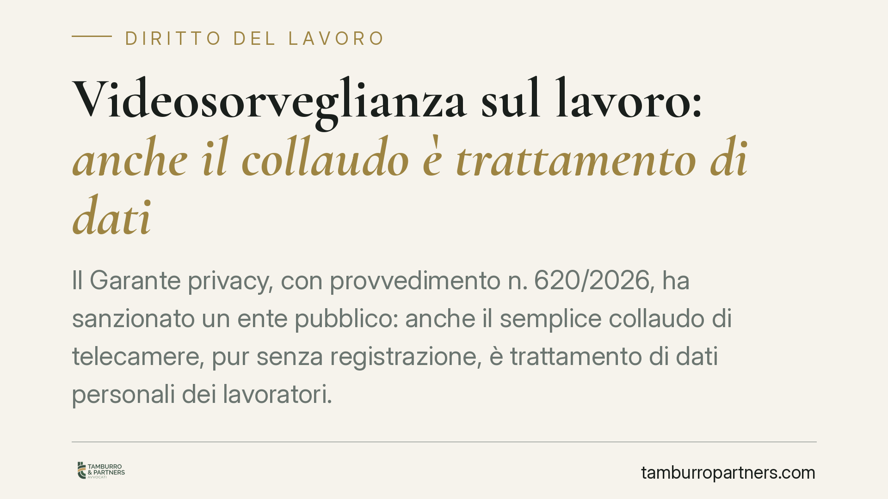

Videosorveglianza sul lavoro: anche il collaudo è trattamento di dati
Il Garante privacy, con provvedimento n. 620/2026, ha sanzionato un ente pubblico: anche il semplice collaudo di telecamere, pur senza registrazione, è trattamento di dati personali dei lavoratori. In più, l'impianto installato risultava difforme dall'accordo sindacale previsto dall'art. 4 dello Statuto. Un doppio richiamo che chiarisce fin dove arrivano gli obblighi del datore di lavoro.

Il caso
Un istituto pubblico ha installato un sistema di videosorveglianza e lo ha sottoposto a collaudo, cioè alla verifica tecnica di funzionamento, senza che in quella fase fosse attiva alcuna registrazione delle immagini. Il datore riteneva perciò di non trattare dati personali e di non dover fornire alcuna informativa.
Il Garante per la protezione dei dati personali ha respinto questa impostazione. Con il provvedimento n. 620/2026 ha sanzionato l'ente per due motivi distinti: la mancata informativa ai lavoratori anche nella fase di collaudo e la difformità dell'impianto rispetto a quanto concordato con le rappresentanze sindacali.
Inquadramento normativo
Il punto di partenza è la nozione di "trattamento" dell'art. 4, n. 2, del Regolamento UE 2016/679 (GDPR). Il concetto è volutamente ampio: comprende qualsiasi operazione compiuta su dati personali, dalla raccolta alla conservazione fino alla semplice consultazione. Ne consegue che la captazione di immagini di persone identificabili è trattamento anche quando le immagini non vengono archiviate. Il collaudo, inquadrando e visualizzando i dipendenti nel campo visivo delle telecamere, integra già un trattamento.
Da qui discende l'obbligo di informativa previsto dall'art. 13 GDPR: prima dell'avvio del trattamento, il datore deve comunicare ai lavoratori finalità, modalità, tempi di conservazione e diritti esercitabili. L'obbligo non è sospeso in attesa che l'impianto diventi "operativo".
Il secondo profilo riguarda l'art. 4 della Legge n. 300/1970 (Statuto dei lavoratori). Gli impianti di controllo a distanza che, pur installati per esigenze organizzative, produttive o di sicurezza, possono comportare controllo sui lavoratori richiedono un accordo con le rappresentanze sindacali o, in mancanza, l'autorizzazione dell'Ispettorato del lavoro. L'installazione di un impianto difforme da quello concordato rende illegittimo il controllo e priva di validità la procedura seguita.
Implicazioni pratiche
Per il datore di lavoro il messaggio è netto: non esiste una fase "neutra" della videosorveglianza. Dal momento in cui le telecamere inquadrano aree frequentate da dipendenti, anche solo per testare la messa a fuoco, scattano gli obblighi privacy.
Altrettanto rilevante è il vincolo di coerenza con l'accordo sindacale. L'autorizzazione ex art. 4 non è una formalità che copre qualunque configurazione: vale per l'impianto descritto nell'accordo. Modifiche al numero di telecamere, agli angoli di ripresa o alle aree coperte possono rendere l'installazione difforme, e quindi illegittima, pur in presenza di un accordo formalmente sottoscritto.
Il soggetto esposto non è solo l'ente pubblico. Qualunque impresa che installi sistemi di videosorveglianza nei luoghi di lavoro affronta gli stessi rischi: sanzioni amministrative del Garante e possibile inutilizzabilità delle immagini in sede disciplinare o giudiziale.
Cosa fare in concreto
- Predisponi l'informativa prima di qualsiasi accensione. Consegna ai lavoratori l'informativa ex art. 13 GDPR già nella fase di collaudo, non al momento della messa a regime dell'impianto.
- Verifica la corrispondenza con l'accordo sindacale. Controlla che numero, posizione e campo di ripresa delle telecamere coincidano con quanto concordato ex art. 4 Statuto o autorizzato dall'Ispettorato.
- Documenta ogni fase. Conserva verbali di collaudo, planimetrie dell'impianto e copia dell'accordo: in caso di contestazione, la prova della correttezza è a carico del datore.
- Esponi la segnaletica informativa. Posiziona i cartelli di area videosorvegliata in modo visibile prima dell'attivazione, coerentemente con il modello del Garante.
- Rivaluta ogni modifica. Ogni intervento successivo sull'impianto va verificato rispetto all'accordo esistente: una modifica significativa può richiedere un nuovo passaggio sindacale o autorizzativo.
La pronuncia conferma un principio di prudenza: in materia di controllo sul lavoro, gli adempimenti vanno anticipati, non rinviati alla fase operativa. Consigliamo di sottoporre a verifica preventiva ogni progetto di videosorveglianza, sia sul versante privacy sia su quello giuslavoristico.
Disclaimer
Contributo informativo a cura di Tamburro & Partners - Avv. Giuseppe Tamburro. Non costituisce parere legale.
Ogni storia di lavoro ha i suoi tempi.
Se gestisci HR e vuoi un confronto su contenzioso, ispezioni o licenziamenti, scrivi allo studio. Ti rispondiamo entro un giorno lavorativo.